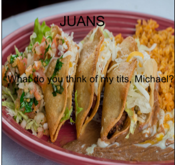

Challenge Design A Band
Challenge Information
Design thinking is Design Thinking is a method used by designers to solve complex problems, and find desirable solutions for clients. Design Thinking draws upon logic, imagination, intuition, and systemic reasoning, to explore possibilities of what could be, and to create desired outcomes that benefit the end user. Without the understanding of what others see, feel, and experience, design is a pointless task. When communicated, empathy can be truly inspirational. The challenge of understanding a complex social situation in order to design a system that supports many and various needs.
Album Cover
Background Story:
The band members are Juan,Jose,and lil Tyrone. They are all best friends and came to be a band by being neighbors and just friends at school. They started in fresman year and staring producing and recording in junior year. They got lots of recognition from social media and soundcloud. Other artists like them got emails from huge producers and trending artist. That is how they became to be.
Inspired Bands
One band that has really inspired the Juans to record and produce is the fugees. They were an American hip hop group who rose to fame in the mid-1990s. Their repertoire included elements of hip hop, soul and Caribbean music, particularly reggae.